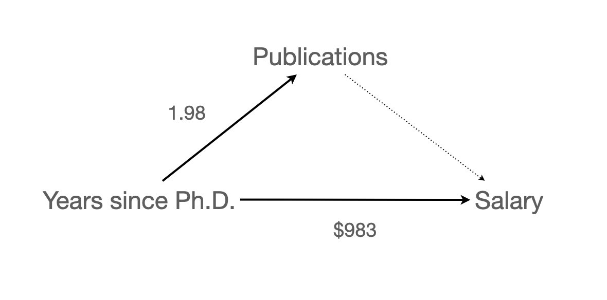
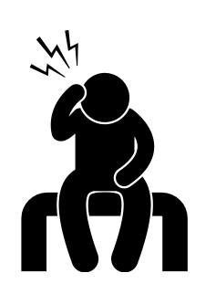
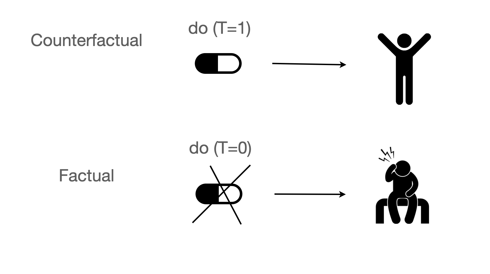

# numerical calculation & data framesimport numpy as npimport pandas as pd# visualizationimport matplotlib.pyplot as pltimport seaborn as snsimport seaborn.objects as so# statisticsimport statsmodels.api as sm# pandas optionspd.set_option('mode.copy_on_write', True) # pandas 2.0pd.options.display.float_format ='{:.2f}'.format# pd.reset_option('display.float_format')pd.options.display.max_rows =7# max number of rows to display# NumPy optionsnp.set_printoptions(precision =2, suppress=True) # suppress scientific notation# For high resolution displayimport matplotlib_inlinematplotlib_inline.backend_inline.set_matplotlib_formats("retina")
연차와 성과가 연봉에 미치는 효과
Direct and Indirect Effects
만약, 다음과 같은 인과모형을 세운다면,

신발을 신고 잠든 다음날 두통이 생긴다면?
Source: Introduction to Causal Inference (ICI) by Brady Neal
Confounding
일반적으로, 표면적으로 드러난 변수간의 관계가 숨겨진 다른 변수(lurking third variable)에 의해 매개되어 있어 진실한 관계가 아닌 경우, confounding 혹은 confounder가 존재한다고 함.
사회과학에서 오래된 가장 핵심적인 문제이나 최근까지도 정확히 정의하기 어려움 개념이었음. Causal analysis라는 통계와는 별개의 개념으로 발전되어 최근에야 이론적으로 완성이 되어 관심이 높아짐.
극단적이지만 이해하지 쉬운 예로는
초등학생 발 사이즈 → 독해력
머리 길이 → 우울증
Simpson’s paradox
아래 첫번째 그림은 집단 전체에 대한 플랏이고, 두번째 그림은 나이대별로 나누어 본 플랏
전체 집단을 보면 운동을 많이 할수록 콜레스테롤이 증가하는 것으로 보이나,
나이대별로 보면, 상식적으로 운동이 긍정적 효과가 나타남.
왜 그렇게 나타나는가?
Source: The book of why by Judea Pearl
관찰 데이터로부터 진정한 관계를 파악하기 위해서는 이와 같은 통계적인 통제를 통해 혹은 인과분석이라는 좀 더 큰 프레임에서 분석해야 하며, 깊은 논의가 필요함
예를 들면,
은퇴한 노인들을 대상으로 규칙적인 걷기가 사망율을 감소시킬 것이라는 가설을 확인하기 위해 1965년 이후 8000명 가량의 남성들을 추적조사한 데이터의 일부를 이용했는데,
Source: The book of why by Judea Pearl
12년 후 사망율에서 casual walker(하루 1마일 이하)와 intense walker(하루 2마일 이상)가 각각 43%, 21.5%로 나타났음.
이 걷기의 효과를 의심케 하는 요소들(confounding)은 무엇인가?
Answers!
건강이 나빠 많이 걷지 못했을 수도…
많이 걷는 사람은 상대적으로 젊을 수도…
많이 먹는 사람이 덜 걸을 수도…
술을 많이 먹는 사람이 덜 걸을 수도…
Case 2
Source: Introduction to Causal Inference (ICI) by Brady Neal
COVID-27
Case 3
Source: Multiple Regression and Beyond (3e) by Timothy Z. Keith
National Education Longitudinal Study of 1988 (NELS:88)
학생들의 과제는 성적에 영향을 주는가? 준다면 그 영향력의 크기는 어떠한가?
Colider
운동능력이 뛰어나면 지능이 떨어지는가?
Cognitive Bias
관계성(correlation)으로부터 인과관계(causation)를 끌어내려는 매우 높은 경향성이 존재
Availability huristic: 쉽게 떠올릴 수 있는 사례들로부터 추론; ex. 커피를 마셔서?
Motivated reasoning: 자신의 믿음을 뒷받침하기 위해 증거를 찾는 것; ex. 데이터분석을 너무 많이 해서?

Causal Inference
기존 통계학의 개념을 넘어서 인과관계를 파악하기 위한 새로운 프레임워크
The Fundamental Problem of Causal Inference

Source: Introduction to Causal Inference (ICI) by Brady Neal; The book of why by Judea Pearl